Karolinne Hartung
Psychoanalysis with purpose.
Visual identity and website for psychoanalyst Karolinne Hartung, in Campinas, Brazil. A mature, welcoming brand that steps away from the clinical look of healthcare to embrace the deeply human side of psychoanalysis: a serif logotype with a floral icon, a KH monogram and a palette of warm tones.
Visit site ↗The idea is to create a mature, confident visual identity that steps away from the traditional clinical look and embraces the deeply human side of psychoanalysis.
The Karolinne Hartung logotype joins elegance and warmth through a serif typeface that blends the stability of a classic font with the organic fluidity of the italic, reflecting the movement of the psychoanalytic process itself. The first name is set in roman and the surname in italic, with a floral icon beside it; “psicanalista” appears in uppercase, sans serif and widely tracked.
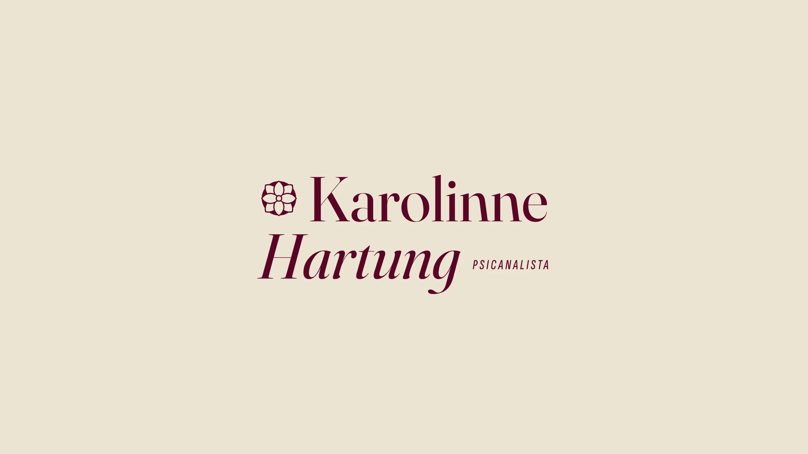
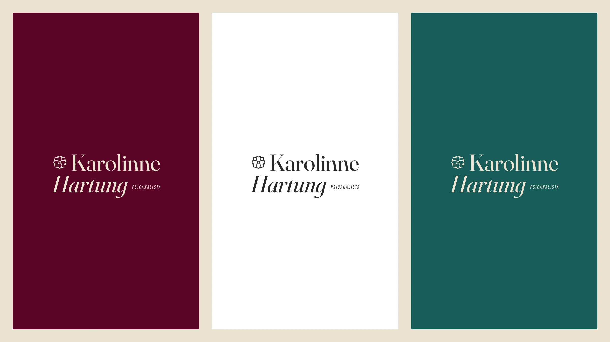
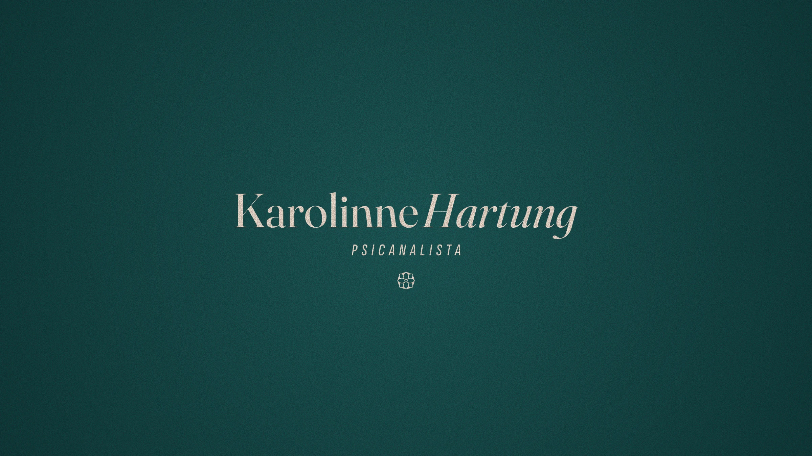
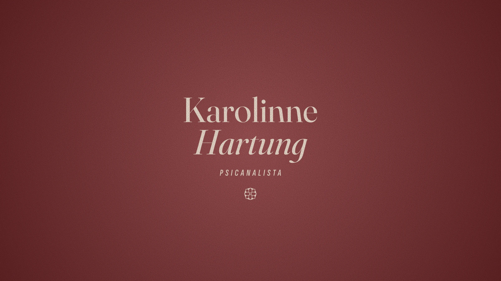
This palette was chosen strategically to move away from the cold, overly clinical tones traditional in healthcare. The goal is a visual environment that conveys warmth, depth and active listening right away.
- Sand#EDE3D2
- White#FFFFFF
- Deep Moss#175C58
- Terracotta#9B5554
- Bordeaux#4E1122
The conscious awakening of the mind, the blossoming of self-knowledge and the recovery of fluidity in life. Three circular icons give shape to each of these movements.
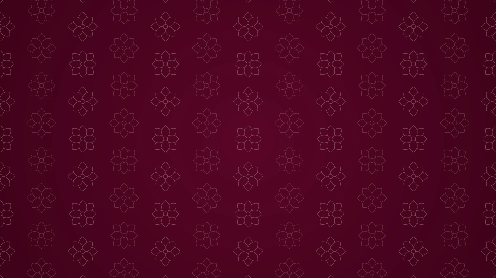
The “KH” monogram was created to work as the brand’s signature seal, bringing a sense of exclusivity, closeness and haute couture to the visual identity. More than a simple abbreviation, it acts as the brand’s intimate signature, visually translating the essence of the psychoanalytic process. It is ideal for more delicate uses, such as social media avatars, stamps, watermarks or the site footer.
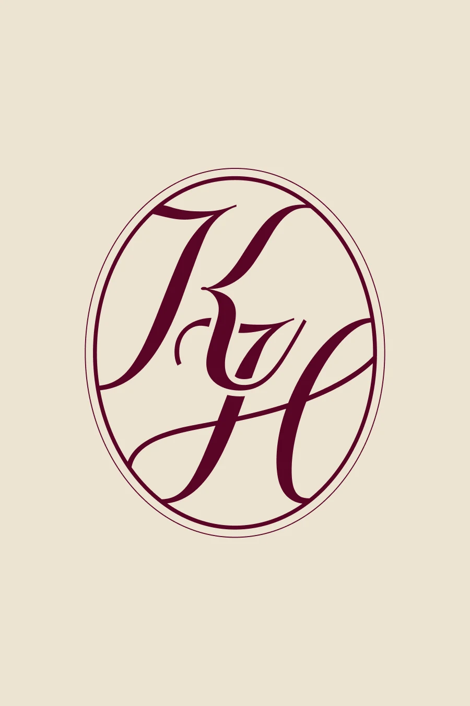
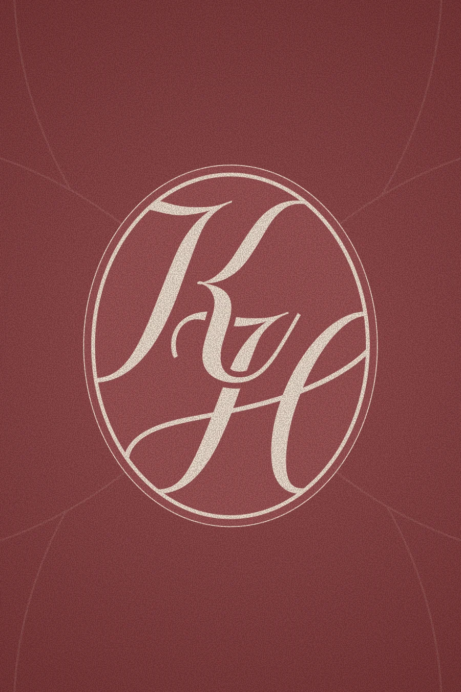
Deep care for real transformation.
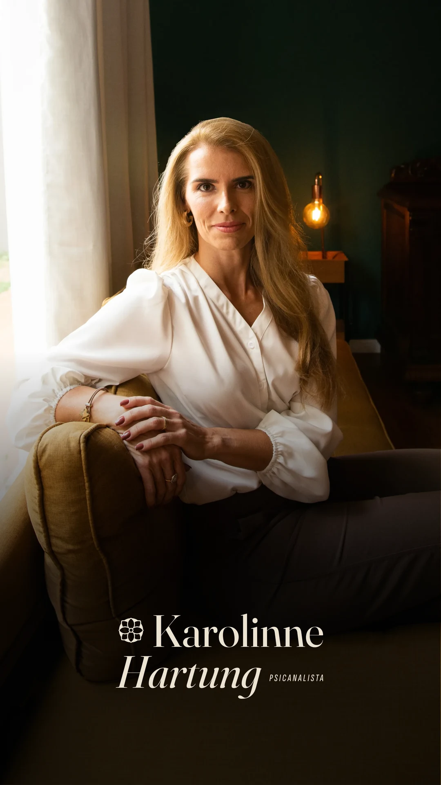
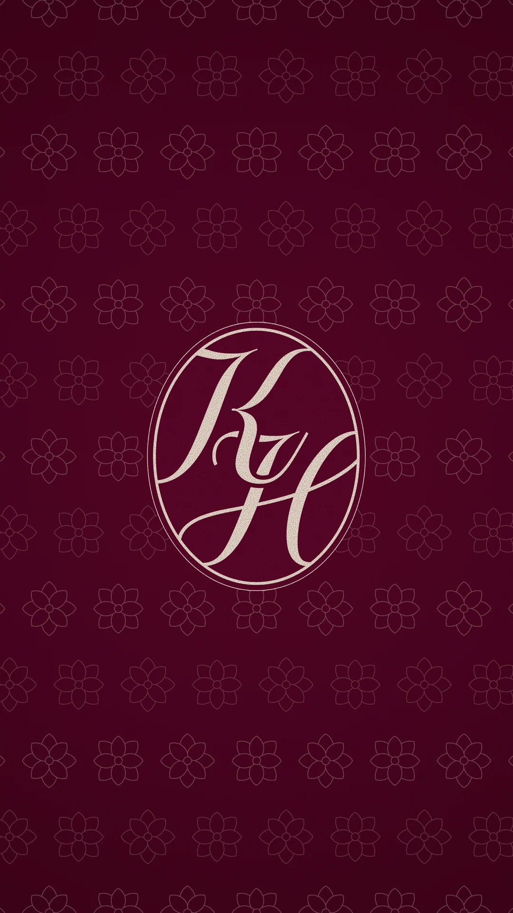
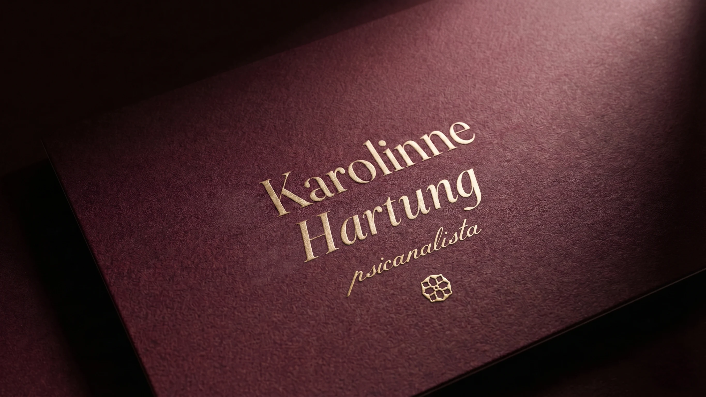
The website takes the identity into the digital space: the warm palette, the serif typography with italic highlights and the three icons — awaken, blossom and flow — organize the page, from the opening invitation to the consulting space.
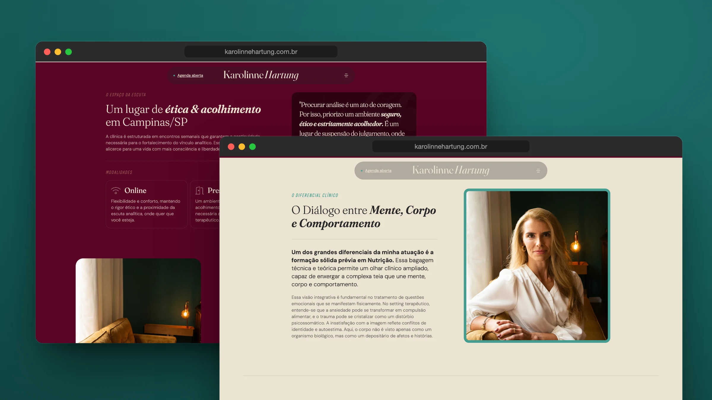
- Design
- Nícolas de Queiróz
- Intermediation
- SD Digital